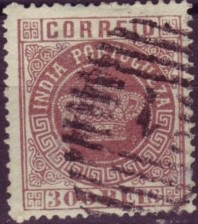
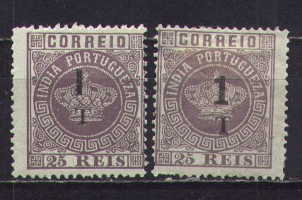
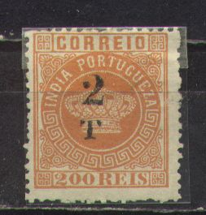
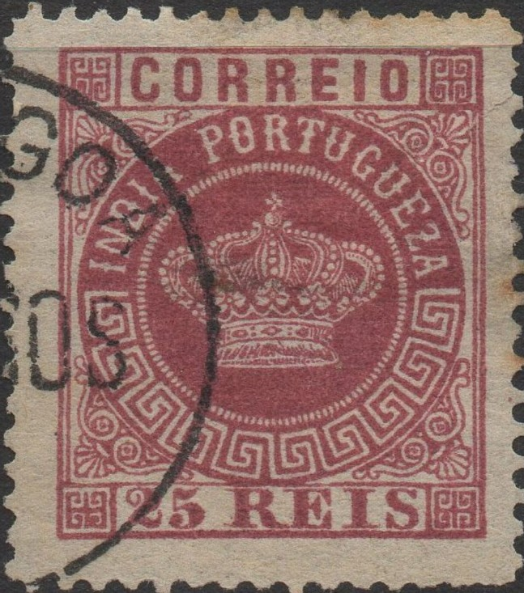

Return To Catalogue - Portuguese India first primitive issues - 1886-1913 - Portuguese 1914 onwards and miscellaneous - Portugal
Note: on my website many of the
pictures can not be seen! They are of course present in the
catalogue;
contact me if you want to purchase the catalogue.
Currency: 1000 Reis = 1 Milreis, from 1882 on: 12 Reis = 1 Tanga, 16 Tanga = 1 Rupie
For the first primitive issues of Portuguese India, click here.

1 1/2 r black (1882, new currency) 4 1/2 r olive (1882, new currency) 5 r black 6 r green (1882) 10 r yellow 10 r green (1880) 20 r olive 25 r red 25 r lilac (or violet) (1880) 40 r blue 40 r yellow (1880) 50 r green 50 r blue (1880) 100 r lilac 200 r orange 300 r brown 1 T red (1882) 2 T blue (1882) 4 T lilac (1882) 8 T orange (1882) Surcharged
(reduced sizes)
'1 1/2' on 5 r black '1 1/2' on 10 r green '1 1/2' on 20 r olive '1 1/2' on 25 r lilac '1 1/2' on 100 r lilac '4 1/2' (blue) on 5 r black '4 1/2' on 20 r olive '4 1/2' on 25 r lilac '4 1/2' on 100 r lilac
'6' on 10 r yellow '6' on 10 r green '6' on 20 r olive '6' on 25 r lilac (or violet) '6' on 40 r blue '6' on 40 r yellow '6' on 50 r green '6' on 50 r blue

'1 T' on 10 r green '1 T' on 20 r olive '1 T' on 25 r lilac '1 T' on 40 r blue '1 T' on 50 r green '1 T' on 50 r blue '1 T' on 100 r lilac (or violet) '1 T' on 200 r orange

'2 T' on 25 r lilac (or violet) '2 T' on 40 r blue '2 T' on 40 r yellow '2 T' on 50 r green '2 T' on 50 r blue '2 T' on 100 r lilac '2 T' on 200 r orange '2 T' on 300 r brown
'4 T' on 10 r green '4 T' on 50 r green '4 T' on 200 r orange
'8 T' on 20 r olive '8 T' on 25 r red '8 T' on 40 r blue '8 T' on 100 r lilac '8 T' on 200 r orange '8 T' on 300 r brown
Two doubly surcharged (errors?) '4 1/2' on '1 1/2' on 5 R and '2' on '4T' on 50 r green exist.
Value of the stamps |
|||
vc = very common c = common * = not so common ** = uncommon |
*** = very uncommon R = rare RR = very rare RRR = extremely rare |
||
| Value | Unused | Used | Remarks |
| 5 r | * | * | |
| 10 r yellow | * | * | |
| 10 r green | ** | ** | |
| 20 r | ** | ** | |
| 25 r red | *** | *** | |
| 25 r lilac | *** | *** | |
| 40 r blue | *** | *** | |
| 40 r yellow | *** | *** | |
| 50 r | *** | *** | |
| 100 r | ** | *** | |
| 200 r | *** | *** | |
| 300 r | *** | *** | |
| New currency (1882) | |||
| 1 1/2 r | c | c | |
| 4 1/2 r | c | c | |
| 6 r | c | c | |
| 1 T | c | c | |
| 2 T | c | c | |
| 4 T | * | * | |
| 8 T | * | * | |
| Surcharged | |||
| 1 1/2 r on 5 r | * | * | |
| 1 1/2 r on 10 r | * | * | |
| 1 1/2 r on 20 r | *** | *** | |
| 1 1/2 r on 25 r | R | R | |
| 1 1/2 r on 100 r | R | R | |
| 4 1/2 r on 5 r | ** | ** | |
| 4 1/2 r on 20 r | * | * | |
| 4 1/2 r on 25 r | *** | *** | |
| 4 1/2 r on 100 r | R | R | |
| 4 1/2 and 1 1/2 on 1 r | *** | *** | Misprint? |
| 6 on 10 r yellow | R | R | |
| 6 on 10 r green | ** | ** | |
| 6 on 20 r | *** | *** | |
| 6 on 25 r | * | * | |
| 6 on 40 r blue | RR | RR | |
| 6 on 40 r yellow | *** | *** | |
| 6 on 50 r green | *** | *** | |
| 6 on 50 r blue | R | R | |
| 1 T on 10 r | RR | RR | |
| 1 T on 20 r | R | R | |
| 1 T on 25 r | *** | *** | |
| 1 T on 40 r | *** | *** | |
| 1 T on 50 r gren | R | R | |
| 1 T on 50 r blue | *** | *** | |
| 1 T on 100 r | *** | *** | |
| 1 T on 200 r | R | R | |
| 2 T on 25 r | *** | *** | |
| 2 T on 40 r blue | RR | RR | |
| 2 T on 40 r yellow | R | R | |
| 2 T on 50 r green | *** | *** | |
| 2 T on 50 r blue | RR | RR | |
| 2 T on 100 r | *** | *** | |
| 2 T on 200 r | *** | *** | |
| 2 T on 300 r | *** | *** | |
| 2 T on 4 T on 50 r | R | R | |
| 4 T on 10 r | *** | *** | |
| 4 T on 50 r | *** | *** | |
| 4 T on 200 r | R | R | |
| 8 T on 20 r | *** | *** | |
| 8 T on 25 r | RR | RR | |
| 8 T on 40 r | R | R | |
| 8 T on 100 r | *** | *** | |
| 8 T on 200 r | *** | *** | |
| 8 T on 300 r | *** | *** | |
For similar stamps of other Portuguese Colonies, click here.
I have often seen a numeral cancel on this issue, consisting of horizontal bars in an elliptic shape with a number in the center.

"NOVA-GOA" towncancel.
I have seen the 1 1/2 r and 6 r with displaced value:


(1 1/2 r black: value much too high, it is in the letters
"PORTUG"; 6 r green: value too high)

(Imperforate misprint, value too high and slanting)
The above 'errors' were printers' waste that ended up in the philatelic market.
I have seen postal stationery in a similar design ('Bilhete Postal').
Reprints exist of these stamps, on ungummed white paper, examples:


Note, that the 20 r red was not issued officially, it only exists in the reprints.

Reprints or proofs? With black bar (red on the 5 r) on the word
"CORREIO"
Fournier forgeries of these crown stamps:
Fournier (a famous forger) has made forgeries of the crown issue of Portuguese India (including the overprints). The central circle with the name "INDIA PORTUGUEZA" is a little bigger than in the genuine stamps. At the top it touches the line above it quite much. In the genuine stamps it touches it very lightly or not at all. The upper right ornament (besides the "G" of "PORTUGUEZA") is not symmetric as the other ornaments. I have also noticed that the left upper ornament (outside the circle, besides the "A" of "INDIA"), is very close to the frame compared to a genuine stamp. The forgeries that were distributed with the Fournier Album have a "FAUX" overprint. For pictures of this click here.
Forged Fournier surcharges as found in 'The Fournier Album of
Philatelic Forgeries'
Forged Fournier cancels "CORREIO DE DAMAO 6/3 1885" and
"DAMAO 2 NOV. 82" as found in the Fournier Album
(reduced sizes)

NOVA GOA 23 AGOS 79" forged Fournier cancel, here together
with a Zululand forged cancel.
If they are cancelled they bear the cancel "CORREIO DE DAMAO 6 3 1885", "DAMAO 2 NOV. 82" or "NOVA GOA 23 AGOS 79". I think the dates could not be changed in these cancels.
(Reduced size)



From a Fournier Album with "FAUX" overprint.


Fournier forged the 1877 series (9 values) and offers them for 2 Swiss Francs in his 1914 price list. The issue of 1880 was offered for 1 Swiss Franc (5 values, including the 25 r lilac and 25 r violet). The surcharges were also forged (including the 25 r lilac and 25 r violet), the '1 1/2' (5 values) were offered for 1 Swiss Franc, the '4 1/2' (5 values) for 1 Franc, the '6' (9 values for 2 Francs, the '1 T' (9 values) for 2 Francs, the '2 T' (9 values) for 2 Francs, the '4 T' (3 values) for 1 Franc and finally the '8 T' (6 values) were offered for 2 Swiss Francs. The varieties 4 1/2 on 1 1/2 on 5 and '2' on 4 T on 50 r (double surcharge) were offered for 1 Swiss Franc. The stamps of the 1882 issue (1 1/2 r black, 4 1/2 r olive, 6 r green, 1 T red, 2 T blue, 4 T lilac and 8 T orange) seem not to have been forged by Fournier. More information concerning these forgeries can also be found at: http://www.tabacaria.org/Selos/Coroa2/IndiaFournier.htm.
Genuine stamp, but probably with forged "1 T"
overprint. The "T" is different from a genuine
"T".
For stamps of Portuguese India issued from 1886 to 1920 click here.


{kind=link}
{kind=link}
{kind=link}